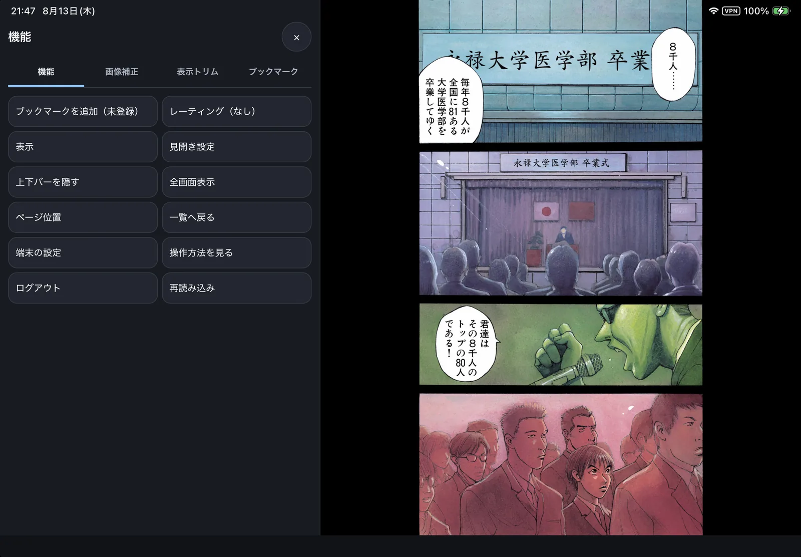

自宅 PC で mImageViewer を起動したままにしておくと、外出先の iPhone・iPad・Android などのブラウザから、自宅 PC の画像・漫画（ZIP / PDF）・動画をそのまま開けます。手元の端末へファイルをコピーする必要はなく、NAS も、ルーターのポート開放も要りません。読んだ位置や★は自宅 PC に記録されるので、帰宅後は PC で続きから読めます。

iPad のブラウザから自宅 PC のライブラリを開いたところ。
しくみ：なぜポート開放が要らないのか
外とつなぐ部分は Tailscale に任せています。Tailscale は、自分の PC とスマートフォンに入れて同じアカウントでサインインすると、その端末どうしだけで通信できる自分専用のネットワークを作るソフトです。ルーターの設定を変えたり、インターネットに何かを公開したりする必要はありません。
- mImageViewer 自体はインターネットに直接出ません。自宅 PC の中だけで待ち受け、Tailscale に参加していない端末からは、URL を知っていても届きません。
- 接続には PIN も必要です。何度も間違えると、しばらく受け付けなくなります。
- 画像が開発者や第三者のサーバーを経由することはありません。画像の読み込みや変換は、すべて自宅 PC が行います。
- この機能は既定でオフです。自分で有効にするまで待ち受けません。
必要なもの
| もの | 内容 |
|---|---|
| 自宅 PC | mImageViewer を起動したままにしておきます。スリープすると接続できません。 |
| Tailscale | 自宅 PC と、外出先で使う端末の両方に入れ、同じアカウントでサインインします。個人で数台をつなぐ範囲であれば、通常は無料のプランで足ります（条件は Tailscale 側で決まります）。 |
| ブラウザ | 外出先の端末のブラウザで開きます。端末に mImageViewer を入れる必要はなく、ホーム画面に登録すればアプリのように起動できます。 |
準備の流れ
最初に一度だけ行います。1 と 2 は Tailscale 側での作業です。
- Tailscale を入れる ―― 自宅 PC と外出先の端末の両方に入れ、同じアカウントでサインインします。
- Tailscale の管理画面で HTTPS の証明書を有効にする ―― 次の手順で必要になります。
- 自宅 PC の mImageViewer で「設定」→「リモート接続…」を開き、「tailscale serve を設定する」を押す ―― 外出先のブラウザから HTTPS で開けるようにする設定を、mImageViewer が代わりに行います。押すまでは何も変更しません。
- 同じウィンドウで PIN を決める ―― 6 文字以上の半角英数字と記号です。外出先から接続するたびに入力します。
- 「リモート接続を有効にする」を押す ―― 接続先の URL と QR コードが表示されます。
- 手元の端末で QR コードを読み取るか URL を開き、PIN を入力 ―― 一覧が表示されれば完了です。
画面つきの詳しい手順は チュートリアル「外出先からリモートで見る」 にあります。
できること
- 一覧を開く：お気に入り、スマートフォルダ、読書履歴・レーティング・本棚・ブックマーク、コレクション（閲覧のみ）
- 漫画を読む：見開き（右綴じ / 左綴じ、表紙あり）、横長分割、ページ位置の指定。左右のタップやスワイプでページ送り、ピンチで拡大
- アーカイブを開く：ZIP / PDF に加えて RAR / 7z / LZH（変換が必要なものは確認してから変換）
- 動画・音声：自宅 PC 側で変換しながら配信します。画質を選べます
- 探す：お気に入りの中のフォルダ・ZIP・PDF を名前で検索、タグから探す
- 印を付ける・見え方を調整する：★とブックマーク、明るさ・コントラストなどの補正、AI 拡大・ノイズ除去、表示トリム
動画の再生は、iPhone / iPad の Safari と、パソコンの Chrome・Edge・Firefox で動作を確認しています。Android の Chrome も対応していますが、実機での確認は済んでいません。
できないこと
- ファイルの操作：コピー・移動・削除・名前の変更はできません。リモートからファイルが消えたり増えたりすることはありません。
- タグの付け外し：付いているタグから探すことはできますが、付けたり外したりはできません。
- 画像の編集：消しゴム・補正レイヤー・隠蔽加工・テキスト注釈・エクスポートは使えません。
- アニメーションの再生：アニメーション GIF などは 1 コマの静止画として表示されます（動画ファイルは再生できます）。
- 複数の端末から同時に操作すること：操作できるのは常に 1 台です。リモートから操作している間、自宅 PC 側の通常の操作は受け付けません（自宅 PC の「切断する」で取り戻せます）。
機能の一覧と、うまくつながらないときの確認点は リモート閲覧（リファレンス） にまとめています。
ノート PC から見たいときは
この機能はスマートフォン・タブレットでの閲覧を主眼に作っています。ノート PC からなら、リモートデスクトップで自宅 PC の画面をそのまま操作するほうが、全機能を使えて、タグ・★・読んだ位置もそのまま続きます。
無料でダウンロードできます。インストール不要の単体 exe 版・ポータブル版もあります。
使い始める前の疑問は FAQ（使い始める前に）、操作の詳細は オンラインマニュアル をご覧ください。